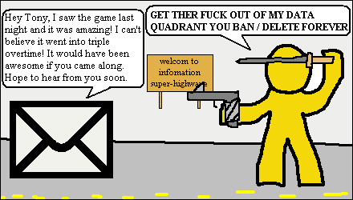

illustration of email block power
(@) AOL will certainely not release random search data on internets of people whoe use AOL search because this is privacy concercn and AOL security and pricvacy is #1. foe example there is no such log of 560000 search datas with each user as radnom 9 didgetr number and they search term next to them so ie. 87583474378 "i am dougr beach" would still be retain in the log but this is not existed log and never has been exist. only gayr people search engine like WISENUT capable of such thinge.